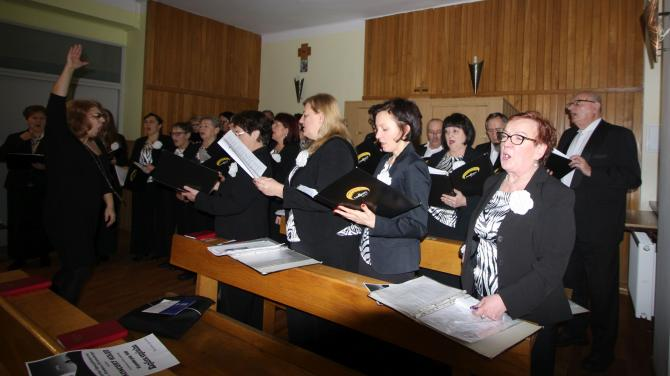
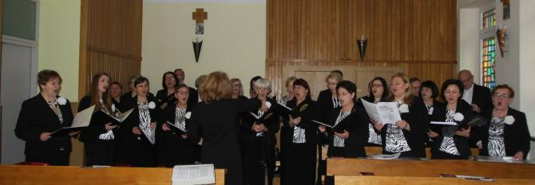

A tymczasem w Cameracie...
.
2018-12-30
Dzisiaj zaśpiewaliśmy kolędy dla ludzi chorych, pozostających w czasie świąt w szpitalu. 
Tak o nas napisali na stronie szpitala:"Camerata zaśpiewała dla chorych
Koncert kolęd - pierwszy w "Żeromskim", ale mamy nadzieję nie będzie ostatnim, przygotował dla chorych i pracowników chór "Camerata" z Wieliczki. Pod dyr. Izabeli Szoty "Camerata" występuje od 1999 roku!
Przebywać w szpitalu to rzecz nieprzyjemna, ale wylądować na oddział w święta - jeszcze gorsza. Pacjenci, którzy znaleźli się u nas w okresie świątecznym, mieli okazje posłuchać kolęd w wykonaniu artystów z Wieliczki. Wprowadzili widzów w niepowtarzalny klimat Świąt Bożego Narodzenia. A ci, którzy jednak nie mogli opuścić swojej sali, mogli usłyszeć piękne głosy chórzystów, gdyż echo roznosiło śpiew po całym Szpitalu. Chór "Camerata" to amatorski chór mieszany. Zaczynali, jako 16-osobowa grupa miłośników pięknego śpiewu, a teraz jest ich ponad 50 zapalonych chórzystów! Brawo i dziękujemy za wspaniały koncert!”
My również bardzo dziękujemy.

© Stowarzyszenie Muzyczne Chór Camerata Wieliczka
Projekt i wykonanie:  Prowadzenie strony oraz zdjęcia: Małgorzata Wysocka-Cebula
Prowadzenie strony oraz zdjęcia: Małgorzata Wysocka-Cebula